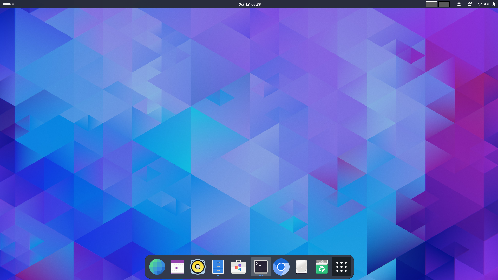
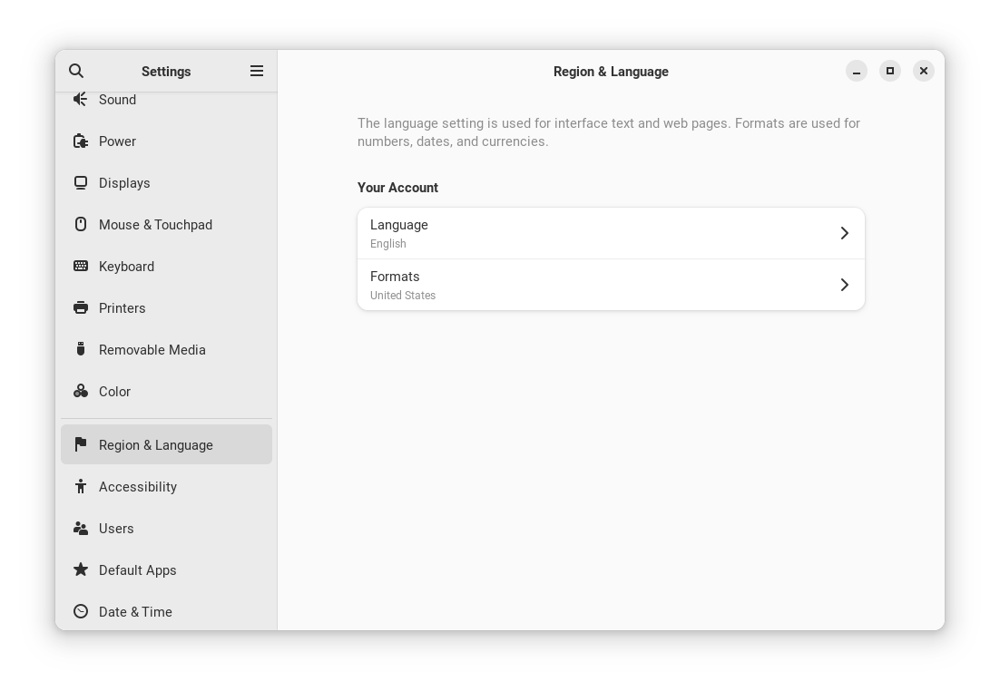
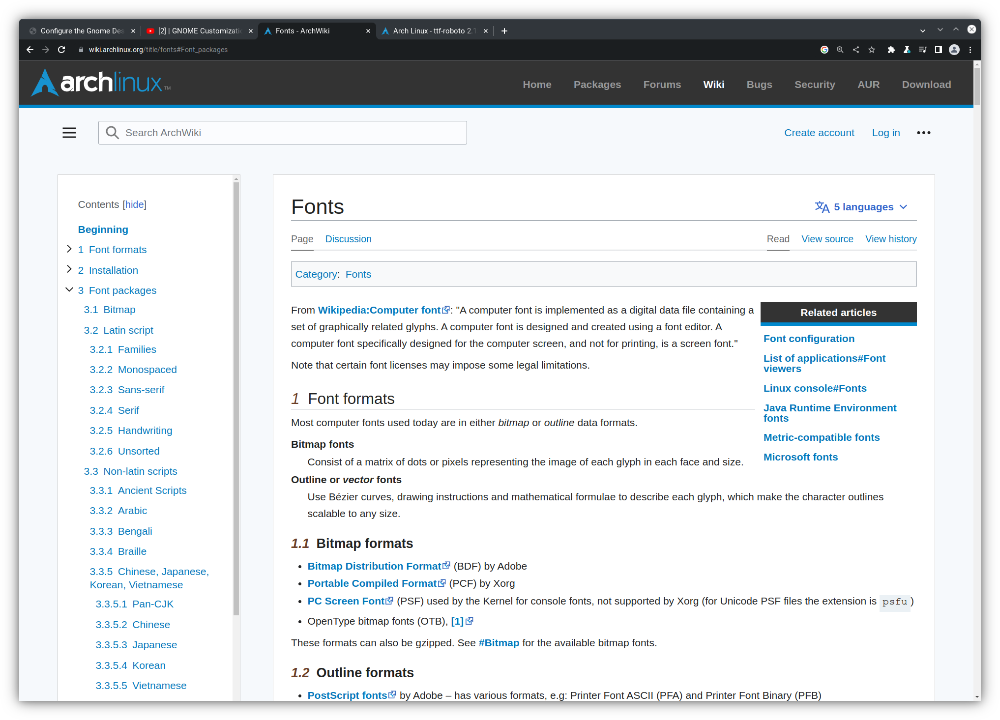
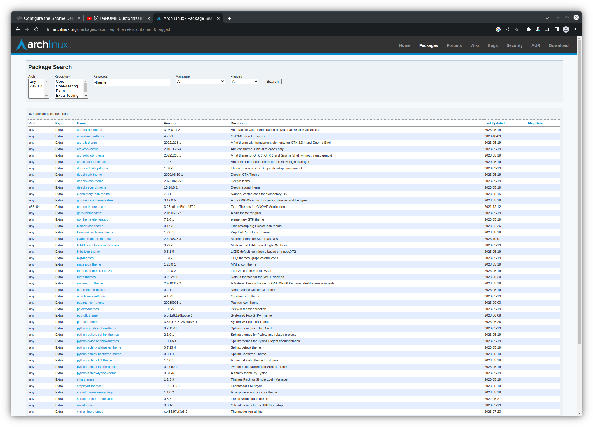
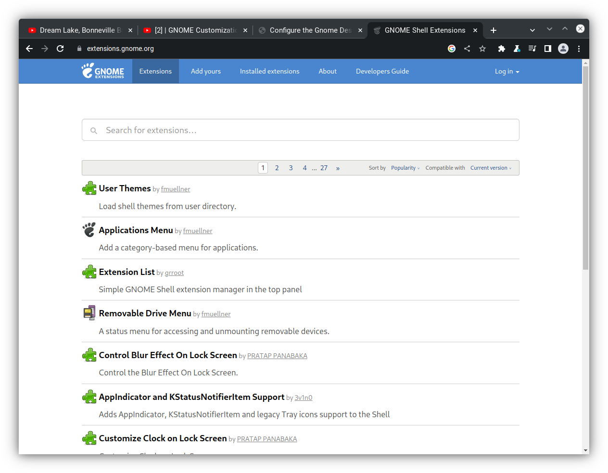
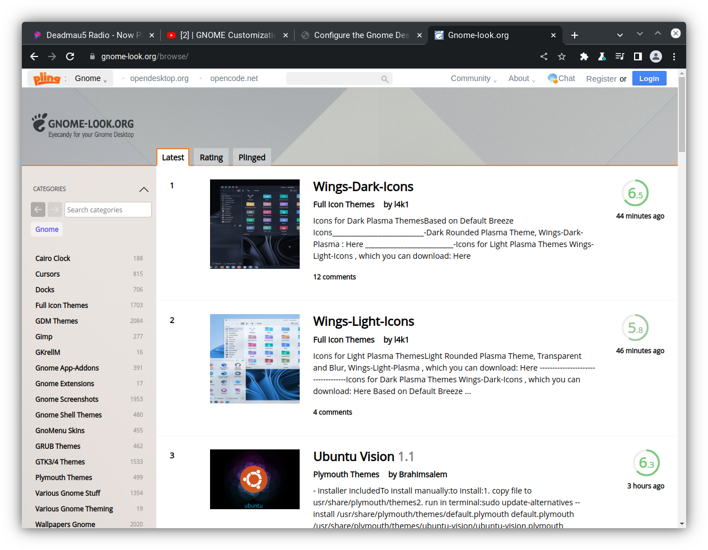
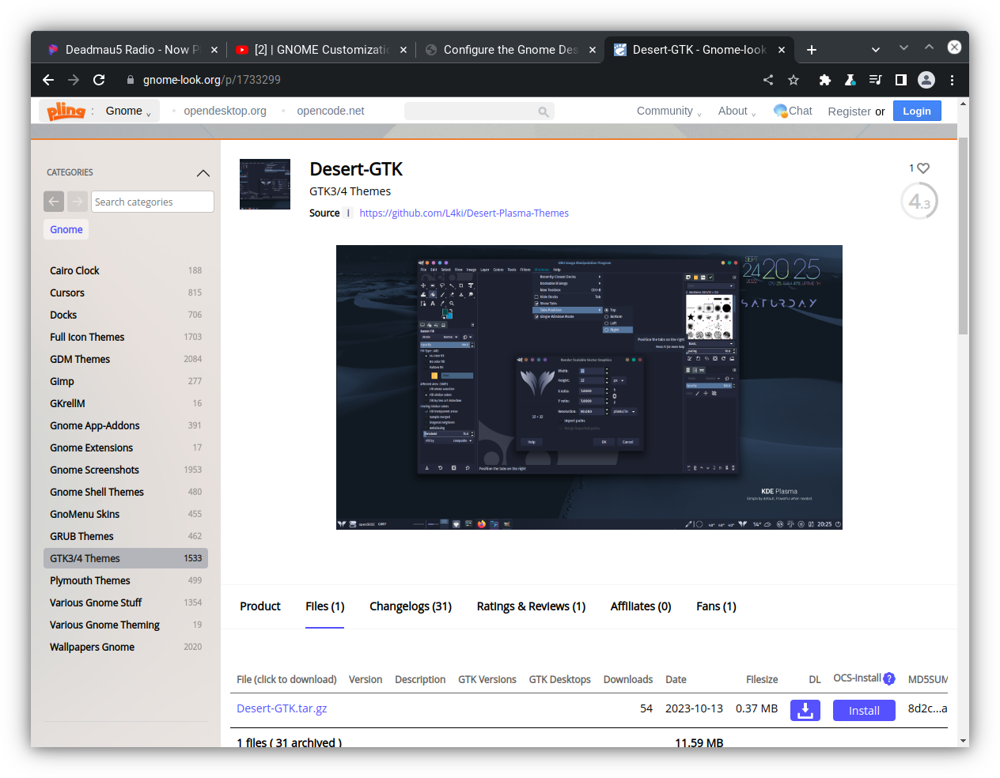

Configure the Gnome Desktop
If you have made it this far I am assuming that you have succesfully installed Arch Linux or you have installed some other flavor of linux. I am also assuming that you have downloaded the Gnome Desktop Environment and can log into your Desktop. If this is the case, lets get to work configuring our Desktop Environment.
Set the Correct Location
When you log into Gnome for the first time you should see a screen that looks something like the image below.
While your screen may not be identical, you should see several icons in the upper right corner of the screen. If you hover over those icons, you should see a window pop up with a lock symbol, a power symbol, and a gear symbol. Click on the gear symbol and it should open a window that looks like the image below.
On the left of this window you will notice many options and the ability
to scroll up or down to access all of these options. Scroll down to the
Region & Language option and click on it. It should populate the right
side of the settings menu with something similar to the picture shown above.
When you first install Gnome, the language option is not populated, which
will prevent you from using many of Gnomes functions. Select the language
that is appropriate for you, and then reboot your computer. You can reboot
by clicking in the upper corner of the screen where the icons are, and then
clicking the power icon. This should provide you options for shut down or
reboot. Click the reboot option.
Change Wallpaper
At this point if you have an image you want to use asa your wallpaper
background, you can install or download the image on your computer. If
you re-open the settings window, you can scroll to an option titled
Appearance. From here you can select from pre-installed wallpaper options
or select from images that you have installed. In addition you can also choose
between default or dark themes. The selection options should look like
the image below.
Access Applications
As you can see, Gnome aims to achieve a clean desktop philosphy where your
applications are not graphically shown on your desktop. Instead you can
access your applications by one of two methods. Regardless of method, you must
depress the start key, which for many keyboards is the key that has a
Windows or Linux symbol on it. This will display a panel on the bottom of the
screen and also add a text box at the top of the screen. You can either type
the name of the application you wish to access into the text box, or you can
click the icon with gridded dots at the bottom right of the display panel. If
you click the gridded box, it will display all of your applications to
select from.
Install AUR
The Arch package repository managed under the pacman command has many
packages that can expand the utility of your Arch configuration. However,
there is another library called the Arch User Repository (AUR) that also has
many packages we will wish to access to customize gnome, as well as other things.
Lets install a package titled yay that makes the process of accessing the
AUR much easier. Using one of the methods described in the previous section,
open you Terminal application and type the following commands.
sudo pacman -S git
Next lets install yay with the following commands. Wherever you see the
phrase username, replace that with your username.
cd /opt
sudo git clone https::/aur.archlinux.org/yay.git
sudo chown -R username:users ./yay
cd yay
makepkg -si
Once you have down this, you will be able to use the yay command to
download packages from the AUR.
Install More Packages
If your terminal is not open, please open it and type the following commands to install a few packages that will help us customize our Gnome Desktop Environment.
yay -S ocs-url
yay -S gnome-extensions
Access Arch Themes
In this section we will start the process of customizing the underlying Graphical User Interface (GUI) for our Desktop Environment. However, we will need access to a search engine to support this. I prefer to use Google Chrome, but you can use whatever search engine you prefer. Lets install an appropriate search engine now.
sudo pacman -S chrome
Fonts
Now that we have installed, Chrome, or a search engine of your choosing, lets navigate the the following Arch Linux page for Fonts. This should open the following web page.
Within this web page you have a list of all font types that are available on the Arch Linux Fonts web page. Each font package listed in this repository can be downloaded via a pacman command, where the package is listed in the circular brackets (). For example, if you want to instal Roboto fonts, you can install with the command;
sudo pacman -S ttr-roboto
Now open the application tweaks that was installed towards the end
of the Arch Linux Installation process. This should
open the following window.
Now that we have installed the Roboto fonts, you can look through the available
fonts in the Fonts menu and you will see the Roboto family of fonts that
can be selected. After selecting a new font, you should notice the font type
used in the Desktop Environment change.
Themes
We can customize the look and feel of the desktop layout with themes that
can be installed from the pacman and Arch User Repository
Arch Themes
The Arch Linux Wiki also contains many themes that can be used to configure the colors, windows, and iconography of the Desktop Environment. You can navigate to the Arch Themes web page. You should see a window that looks like the figure below.
Like the Fonts library, this contains a library of themes that the user can
download with the pacman command in terminal. For example, I like to use
the Arc arc-gtk-theme so we can download that via terminal.
sudo pacman -S arc-gtk-theme
Now if you open the the tweaks tool and navigate to the appearance tab,
you can toggle the options for shell. You should see Arc-Dark and
Arc-Light. If you select one of these options you will see a change in
the appearance of your desktop environment. You should play around with different
options and select a theme that supports your work flow.
AUR Themes
In addition to the themes in the pacman repository you can also
download themese from theme
Arch User Repsitory Themes
library. The web page for the AUR Themes library should look like the image
shown below.
The themes here can be downloaded with the yay command. For
example, if I wanted to install the adwaita-shell-theme, I could
install it with the command;
yay -S adwaita-shell-theme
In general I prefer a simple look to my desktop GUI; however, each user should browse these options and decide what themes you like to use.
Modify Gnome Extras
We can add functionality to our Desktop Environment by navigating to the Gnome Extensions website. The Gnome Extensions web site should look like the image below.
In order for use to use the functionality in this web site, you must have the Gnome Extensions package downloaded, which was accomplished earlier in this section, but just in case, you can download it with the following command.
yay -S gnome-extensions
Each item in the Extensions site can be clicked on, which opens up another
window with a slider button that can be used to turn the option on or off.
The slider button should look like this example from the Extension List
extra option.
If turned on, the functionality will be displayed in the Extensions
application. I personally user the DashtoDock, Shortcuts,
Tactile, and Tiling Assistant extensions. However, each user should
browse the options to see what extensions are right for you. The image below
shows somthing similar to what you might see in your Extensions Application.
Access Gnome Look Options
We can also use the Gnome-look website to further customize out Desktop GUI. When logged into the Gnome-desktop web site it should look like the image below.
Once here, scroll to the GTK3/4 Themes.
Inside of this you will see many themes that can be downloaded. In this example, I clicked on the Desert-GTK theme, which brought up this page.
Once a theme option has been clicked, you can further click on the File option
and then click the Install button. This will lead you through a series of prompts
that will lead to the installation of the theme on your computer. You can access
the themes from the Tweaks Application and turn the theme on or off in the
Appearance tab. I prefer to use the Relax-GTK or Graphite themes.
Configure Terminal
Finally we need to update our terminal to allow for transparency. To do this we will need to install a new terminal with the follwing command.
yay -S gnome-terminal-transparency
Accept the default installation options until it asks you if your
want to remove the original terminal because it conflicts with this
package. In this instante type y and then hit enter. Once this complete
downloading, if you close and open the terminal, you should now have a
transparency option under the preferences menu.